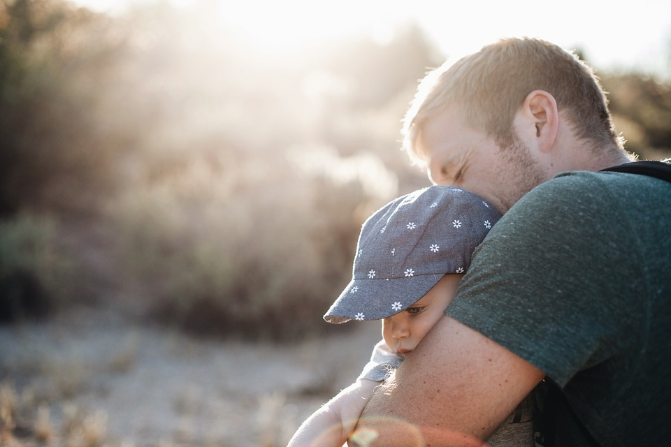

Beluister hun vragen
Kinderen stellen vaak moeilijke vragen waarop een gepast antwoord geven
niet altijd eenvoudig is. Het is belangrijk dat we hun vragen beluisteren.
Probeer na te gaan wat er bij hen leeft en vertrouw erop dat kinderen maar
vragen wat ze op dat moment aankunnen. Wees eerlijk tegen het kind of
de jongere. Geef hen geen valse hoop (“Oma zal wel weer beter worden”),
maar hoop samen met hen op realistische zaken zoals de hoop dat papa
zo goed mogelijk zal verzorgd worden of dat mama zo lang mogelijk zal
thuis blijven. Als je geen antwoord weet op een vraag, vertel dit dan eerlijk
aan het kind of de jongere. Moedig hen aan om zoveel mogelijk vragen te
stellen en zo vaak mogelijk op bezoek te gaan bij de zieke.
Geef ze ruimte
Weten dat je mama, papa of grootouder binnenkort zal sterven, is zwaar
om dragen. Een kind kan daar onmogelijk elke minuut van de dag mee
bezig zijn. Dus gaat hij een balletje trappen of televisie kijken of een computerspelletje spelen. Volwassenen zien dit soms als een gebrek aan
gevoel, maar zoals een volwassene zich op zijn werk kan storten om het
verdriet te vergeten, zo stort een kind zich op zijn spel. Het kind wisselt het
bezig zijn met het verlies af met het zich richten op andere dingen zoals
zijn spel. Kinderen de ruimte geven betekent dat je kinderen laat kiezen
met wie ze willen praten over hun zorgen en wanneer ze dat willen. Het
heeft weinig zin hen te forceren om te praten.

Laat hen niet alleen
Kinderen in een verdrietsituatie verliezen vaak meer dan alleen die dierbare
persoon. Ze verliezen ook hun vertrouwde, vanzelfsprekende leefomgeving
van vóór het verlies en soms ook een stuk ouderlijke aandacht gezien je als
ouder zelf aan het rouwen bent. Kinderen hebben niet enkel behoefte aan
troost en hulp, ze willen ook graag zelf hun ouders helpen. Het helpt kinderen als ze deze troost mogen geven en hierin gezien en gewaardeerd
worden (helpen is prima zolang het kind niet te veel de ouderrol op zich
neemt).